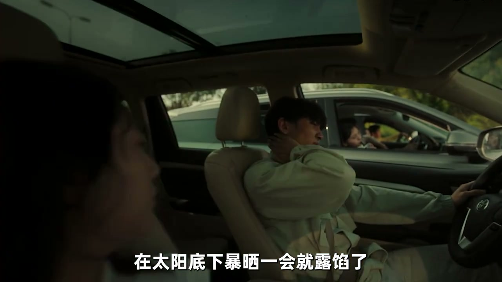
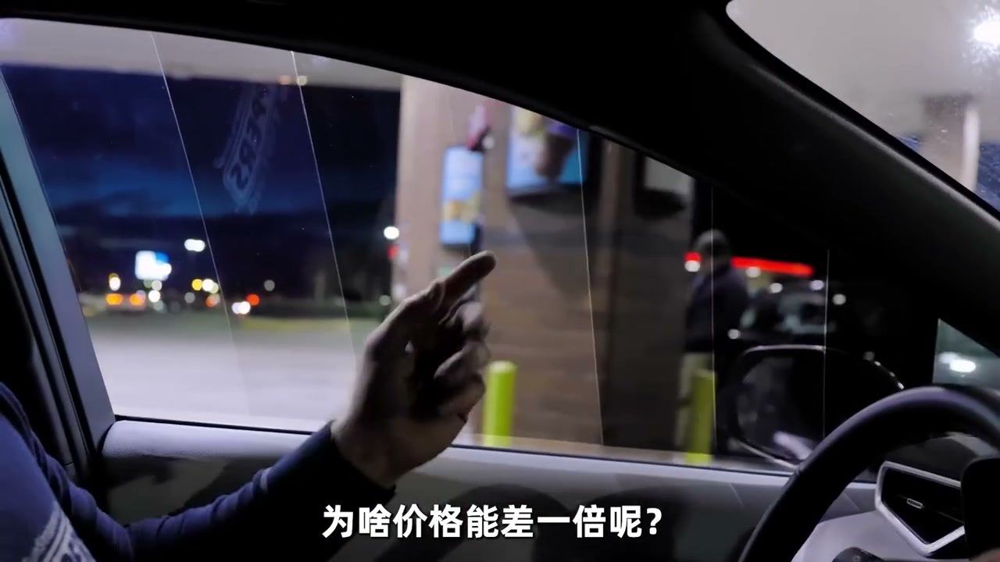
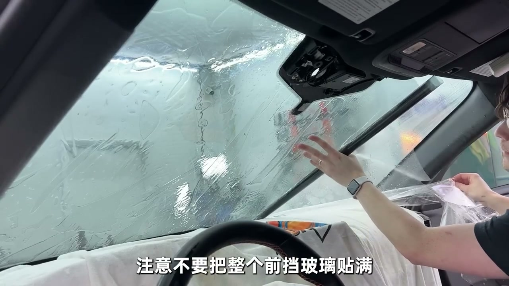
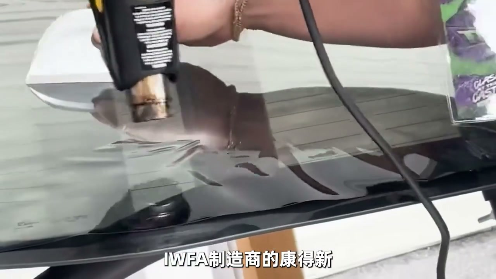

01
中文
膜的颜色越黑，只能代表它的遮光效果不错。
EN
A darker film only means better shading.
表达提示shading（遮光）

Scene English · 汽车 · 车窗膜
How to Choose Car Window Film
🎧 语音讲解
Shading, Insulation, UV: Three Things
情境膜的颜色越黑只代表遮光好，遮光、隔热、防晒是三件事；太阳热量大头来自可见光和红外线。
膜的颜色越黑，只能代表它的遮光效果不错。
A darker film only means better shading.
表达提示shading（遮光）
遮光、隔热、防晒是三件事，别混为一谈。
Shading, heat rejection, and UV blocking are three separate things.
表达提示heat rejection（隔热）
太阳光中约46%是可见光，50%是红外线，热量的大头来自它们。
Roughly 46% of sunlight is visible and 50% infrared—that's where the heat is.
表达提示infrared（红外线）
没有针对红外线的组合技术，能挡住的只有可见光。
Without infrared tech, a film only blocks visible light.
表达提示block visible light（只挡可见光）
shading（遮光
heat rejection（隔热

The Heat-Lamp Demo Is Marketing
情境烤灯测试的能量集中在800-1500nm，只是太阳光的一小部分，相当于只考选择题满分其他全空。
烤灯测试说红外线阻隔率90%，是利用红外线漏洞的营销。
A demo quoting 90% IR rejection exploits a loophole in the test.
表达提示marketing trick（营销陷阱）
烤灯能量集中在800到1500纳米，只是太阳光能量的一小部分。
The lamp's energy sits at 800-1500 nm—a tiny slice of sunlight.
表达提示a tiny slice（一小部分）
相当于考试只选选择题满分，其他题全空。
Like acing the multiple-choice section and leaving everything else blank.
表达提示selective testing（选择性测试）
劣质吸热膜晒一会儿就漏馅，隔热效果不到半年断崖式下跌。
Cheap heat-absorbing films fail fast, losing insulation within months.
表达提示lose insulation（隔热失效）
marketing trick（营销陷阱
a tiny slice（一小部分

Trust the TSER Number
情境普通人买膜只看两点：认准官方参数表上的TSER总太阳能阻隔率，不要被任何单一参数迷惑。
普通人买膜应该看什么？就两点，首先认准官方参数表上的TSER。
What should buyers check? First, the official TSER—total solar energy rejection.
表达提示TSER（总太阳能阻隔率）
不要被任何单一参数迷惑，什么红外线阻隔率90%都不要轻信。
Don't fall for single numbers like 90% IR rejection.
表达提示don't be fooled（别被迷惑）
TSER是国际窗膜协会认可的衡量隔热效果的综合标准。
TSER is the industry-recognized measure of overall heat rejection.
表达提示overall standard（综合标准）
重点关注前挡风玻璃，因为有透光率不得低于70%的国标强制要求。
Focus on the windshield—a national standard demands at least 70% light transmission.
表达提示70% transmission（70%透光率）
TSER（总太阳能阻隔率
don't be fooled（别被迷惑

Absorbing vs. Reflective Films
情境根据隔热原理分两派：吸热膜靠陶瓷颗粒吸收热量，反射膜靠金属镀层把热量反射出去。
根据隔热原理的不同，窗膜分成两派：吸热膜和反射膜。
By principle, films split into heat-absorbing and heat-reflecting types.
表达提示absorb vs reflect（吸热与反射）
陶瓷膜把氧化烟芯等陶瓷颗粒嵌入PET基材，像海绵一样热容量很大。
Ceramic films embed nano-ceramic particles—a sponge with huge heat capacity.
表达提示ceramic film（陶瓷膜）
金属膜利用磁控溅射技术把金属一层层打在膜上，像一面透明的镜子。
Metal films sputter metals into layers—a transparent mirror bouncing heat away.
表达提示metal film（金属膜）
金属膜会屏蔽电磁信号，前挡建议陶瓷、侧后挡金属。
Metal films block signals; pair a ceramic windshield with metal side glass.
表达提示block signals（屏蔽信号）
absorb vs reflect（吸热与反射
ceramic film（陶瓷膜

Adhesive and Substrate Decide Lifespan
情境安装胶层决定会不会起泡，PET基材决定看出去清不清楚，这两点才是容易缩水的地方。
大家只关心隔热性能，但安装胶层和基材才是缩水的重灾区。
Everyone chases insulation, but the adhesive and substrate are where corners get cut.
表达提示cut corners（缩水）
安装胶层决定窗膜以后会不会起泡。
The adhesive layer decides whether bubbles appear later.
表达提示bubbles（起泡）
差胶经过几年暴晒和加热丝烘烤，就会大面积鼓包。
Poor adhesive bubbles out after years of sun and defroster heat.
表达提示bubbling out（鼓包）
PET基材决定眼睛往外看晕不晕，好膜用几年依旧透亮。
The PET substrate determines clarity—good film stays crystal clear for years.
表达提示clarity（清晰度）
cut corners（缩水
bubbles（起泡

Avoiding Traps on a Budget
情境避开劣质膜最简单的方法是查国际窗膜协会的制造商认证，看品牌是不是有自己工厂的实体企业。
想避开市面上劣质膜，最简单的方法是查国际窗膜协会的制造商认证。
The easiest way to skip junk is checking the industry association's manufacturer list.
表达提示manufacturer list（制造商认证）
成为制造商会员，品牌必须是拥有自有生产线的实体企业，不是贴牌货。
Members must own real production lines—not white-label re-branding.
表达提示white label（贴牌）
窗膜的性能边际递减很严重：阻隔率从30%提到50%体感明显，再往上多花几千块只有10%。
Diminishing returns: 30% to 50% is a big feel, but beyond that costs soar for tiny gains.
表达提示diminishing returns（边际递减）
贴膜是三分膜七分贴，贴完三到七天不要升降车窗。
Film is 30% product, 70% install—don't roll the windows for 3-7 days.
表达提示30/70 rule（三分膜七分贴）
manufacturer list（制造商认证
white label（贴牌
说三件事
说TSER
说吸热反射
说金属膜缺点
说寿命
说性价比
黑不代表隔热。
烤灯测试是营销。
认准TSER总阻隔率。
避开白牌贴牌货。
贴膜后别急着升降窗。